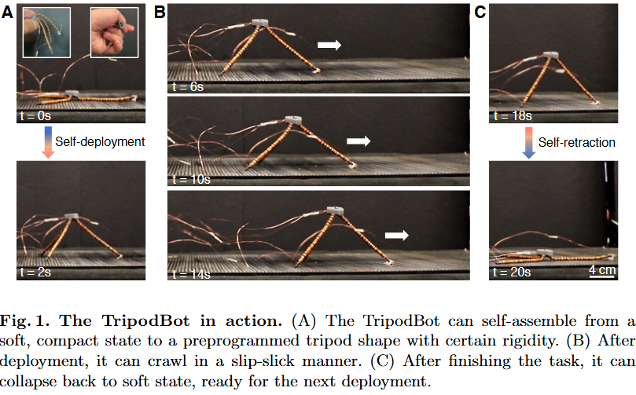

ISRR 2024
TripodBot — Self-Deployable CCPJ Robot
Authors: Wenzhong Yan, Brian Ye, Mingxi Li, Jonathan B. Hopkins, Ankur Mehta
TripodBot uses Contracting-Cord Particle Jamming (CCPJ) beams to self-deploy into a tripod, tune stiffness, and perform slip-stick crawling.
Key Contributions
- CCPJ Beams: Integrated beads and contracting cords that self-assemble and tune stiffness via jamming.
- Self-Deployment: Demonstrates a bounding box expansion of approximately 43×.
- Locomotion Performance: Achieves a speed of ~0.51 m/min and navigates gaps down to ~31% of its height.

Mechanism & Control
Each CCPJ beam contains beads threaded over SMA (Shape Memory Alloy) wire with designed slack. Heating the SMA increases tension, which "jams" the particles together, increasing beam stiffness by over 50×. [cite: 47]
Experimental Highlights
- Navigates through confined tunnels using directional friction claws.
- Load tests included supporting a 19.8 kg footstep using the SCP actuator variant.
- Tunable actuation periods allow for adaptable climbing up to 15°.
Quick Specs
- Beads: 3 mm Plywood
- Actuator: 0.15 mm SMA wire / SCP
- Stiffness: >50× Tunable
- Deployment: 43:1 ratio
Research Resources
Published at the International Symposium on Robotics Research (ISRR).
Full Paper